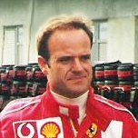

Temporada 2009 F1
Mudanças no regulamento
A principal mudança do regulamento de 2009 será a redução da carga aerodinâmica dos carros, com o objetivo de facilitar as ultrapassagens. Serão proibidos os apêndices, o difusor (parte de trás do assoalho) seguirá um desenho padrão, e o aerofólio traseiro será drasticamente reduzido.
O aerofólio dianteiro será móvel e controlado por um motor elétrico. Com isso, os pilotos poderão alterar o ângulo de ataque de acordo com o ponto da pista em que estiverem. O spoiler foi abaixado e alargado, indo até o limite dos pneus.
Para a temporada 2009 será introduzido o KERS (Sistema de Recuperação de Energia Cinética), ele é composto por duas baterias, que armazenarão energia gerada nas freadas, que será reutilizada com a injeção de mais alguns cavalos no motor.
Devido a mudança de regulamento previsto para 2009 pela FIA, a Bridgestone irá produzir pneus slick, é o retorno dos pneus lisos e sem sulcos a categoria.
Equipes:
 Reino Unido - Vodafone McLaren Mercedes Reino Unido - Vodafone McLaren Mercedes |
 Itália - Scuderia Ferrari Marlboro Itália - Scuderia Ferrari Marlboro |
 Alemanha - BMW Sauber F1 Team Alemanha - BMW Sauber F1 Team |
 França - Renault F1 Team França - Renault F1 Team |
 Japão - Panasonic Toyota Racing Japão - Panasonic Toyota Racing |
| Itália - Scuderia Toro Rosso |
 Austria - Red Bull Racing Austria - Red Bull Racing |
| Reino Unido - AT&T Williams |
 Índia - Force India F1 Team Índia - Force India F1 Team |
| Reino Unido - Brawn GP F1 Team |
Pilotos
Os 3 pilotos mais bem classificados até o momento são:
| Foto | Nome | Pontos |
 |
Jenson Button | 72 |
|  | Rubens barrichello | 56 |
 |
Sebastian Vettel | 53 |